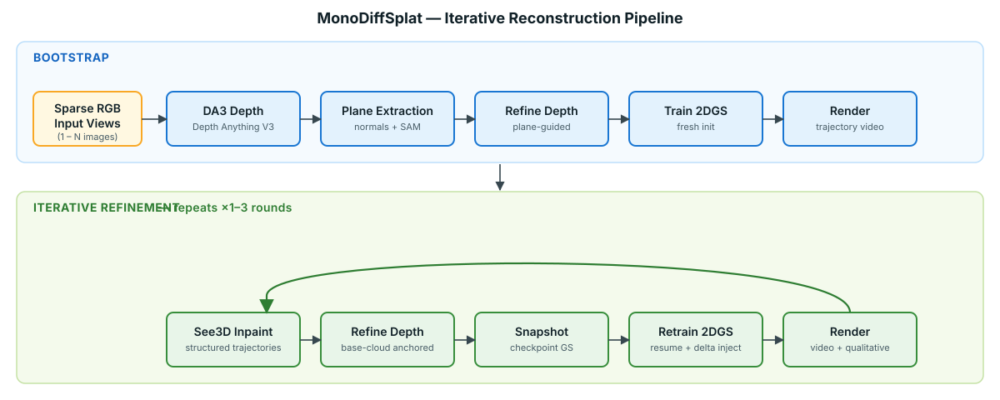
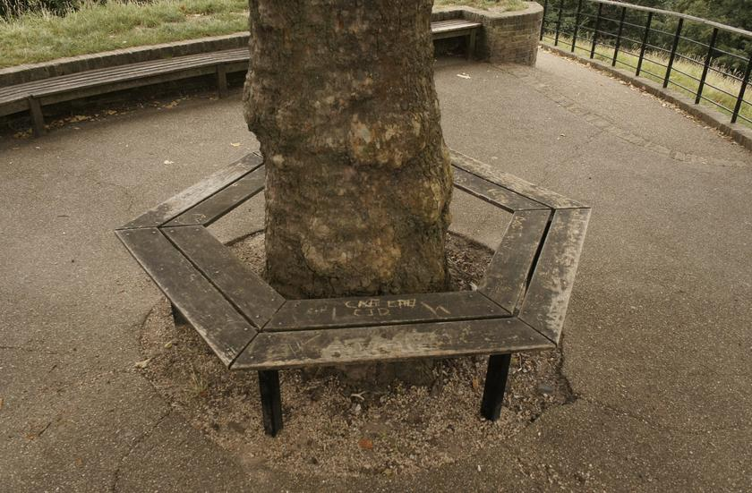
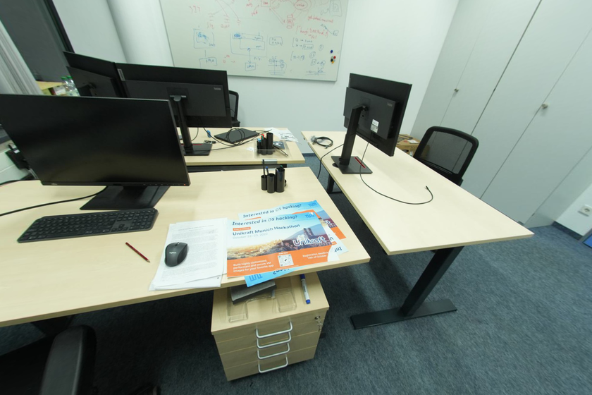

Single input image

Generated scene
Single input image

Generated scene
Single input image

Generated scene
Figure 1: Qualitative sparse-view reconstruction examples.
Reconstructing usable 3D geometry from very sparse inputs remains difficult, especially when large parts of a scene are unobserved.
Recent pipelines can combine monocular depth, plane priors, Gaussian rendering, and generative completion, but the interaction between those components becomes fragile in single-view and low-view regimes.
MonoDiffSplat is a repository pipeline built on top of G4Splat, Depth Anything 3, See3D, and 2D Gaussian Splatting.
In the current implementation, the system bootstraps depth and plane structure from the input views, trains an initial 2D Gaussian model, then runs up to three iterative rounds of novel-view rendering, See3D inpainting, base-cloud-anchored depth refinement, point-cloud quality control, and resumed Gaussian training.
Within that G4Splat-based framework, MonoDiffSplat extends the implementation with Depth Anything 3 initialization for sparse and single-view settings, stage-to-stage chaining of plane models and base clouds, structured coverage-driven view selection, and resume-stage geometry injection with additional pruning during Gaussian retraining.
This page focuses on the repository pipeline and qualitative outputs.
Single input image
Generated scene
Single input image
Generated scene
Single input image
Generated scene
Figure 1: Qualitative sparse-view reconstruction examples.
MonoDiffSplat keeps the core G4Splat ingredients and reorganizes them into three phases with explicit stage chaining and iterative refinement:

Figure 2: Pipeline summary. Bootstrap builds the first depth-refined point cloud and Gaussian model from sparse RGB inputs. The iterative phase then repeats one to three times: render novel views, inpaint with See3D, refine depth against the previous round's geometry, export QC point clouds, resume Gaussian training, and re-render.
Depth and normal estimates are used as geometric supervision throughout refinement and training. In the current implementation, this is meant to reduce floaters, keep planar regions better aligned, and make sparse-view reconstructions more stable when only a few input images are available.

Scene 1: Outdoor scene with geometric detail

Scene 2: Room reconstruction
This repository is built on G4Splat and also depends on Depth Anything V3, See3D, and the broader 2D Gaussian Splatting toolchain. Credit for the base G4Splat formulation remains with the original authors; MonoDiffSplat primarily documents and implements the iterative sparse-view extensions described in this repository.
We thank the upstream authors for releasing code, models, and documentation that made this implementation possible.